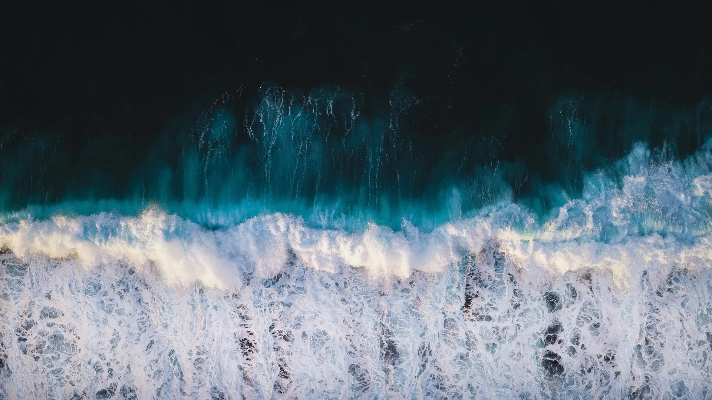

LRF Akademi
Uygulamalı düğüm atölyesi, atış laboratuvarı, çekiş aksiyonları ve gerçek mera senaryolarıyla sahadaki ustalığını bir üst seviyeye taşı.
Kritik LRF Düğümleri
Takımın en zayıf halkası her zaman düğümdür. İnce PE iplerde çeker kaybını sıfıra indiren, mikro halkalardan takılmadan akan 3 temel LRF düğümünü video eşliğinde adım adım uygula.
FG Knot (PE İp - Lider Birleştirme)
LRF'nin altın standardı olan FG Knot, florokarbon lideri bükmeden PE örgü ipi çin parmak tuzağı mantığıyla liderin üzerine sarar. Kamışın mikro kılavuz halkalarından sürtünmesiz geçer ve %95'e varan düğüm direnci sunar.
- PE ana ipi parmaklarınla veya kamış esnekliğinden destek alarak tamamen gergin tut.
- 0.14–0.20 mm florokarbon lideri gergin PE ipin bir altından bir üstünden geçirerek 18–22 çapraz sarım ör.
- Örgüyü sabitlemek için PE ipin serbest ucuyla hem ana ip hem lider üzerinden 2 ters yönlü yarım kazık (half-hitch) at.
- Düğümü iyice ıslat; ana ip ve lideri iki yandan gererek PE sargılarının florokarbona gömülmesini sağla.
- Lider fazlalığını 1–2 mm payla kes, ana PE ip üzerine 4 yarım kazık (veya Rizzuto bitişi) atarak düğümü kilitle.
Albright & Mahin Düğümü (Hızlı Saha Lideri)
Rüzgarın sert estiği, karanlıkta veya balık sürüsünün tam önünden geçtiği anlarda FG Knot ile vakit kaybetmemek için kurtarıcı çözümdür. Kafa lambası ışığında bile 45 saniyede güvenilir lider bağlantısı kurarsın.
- Florokarbon liderin ucunu 8–10 cm katlayarak düzgün bir "U" halkası oluştur (Mahin için uca basit bir durdurma düğümü ekle).
- PE örgü ipi bu halkanın içinden geçirip liderin çift katı etrafında halka ucuna doğru 10–12 tur sıkıca sar.
- Mahin/Modified Albright kilidi için PE ipi aynı sargıların üzerinden geri yönde 5–6 tur daha sararak kilit gövdesi oluştur.
- PE ipin ucunu, başlangıçta girdiğin yönün tam aynısından "U" halkasından çıkar, ıslat ve yavaşça çekerek oturt.
Improved Clinch & Rapala (Halka) Düğümü
Liderin ucunu #000–#00 mikro klipse bağlarken Improved Clinch düğümü hız ve güvenilirlik sağlar. Klipssiz avlarda veya 2–4 cm mikro maket balıkların yüzüşünü bozmamak için ise Rapala (Halka) düğümü serbest mafsal etkisi yaratır.
- Improved Clinch: Lideri klips halkasından geçir, ana lider etrafında 6 tur çevir, ucu önce alt halkadan sonra oluşan büyük üst ilmekten geçirip ıslatarak sık.
- Rapala Düğümü (Başlangıç): Liderde basit bir adi düğüm (overhand knot) yap ama sıkma; serbest ucu maket balığın burnundaki halkadan geçir.
- Ucu tekrar gevşek adi düğümün içinden geri geçirip ana lider etrafında 4–5 tur sar.
- Aynı ucu tekrar adi düğümden ve oluşan son boşluktan geçirerek ıslat; maket burnunda 4–6 mm serbest halka kalacak şekilde oturt.
Atış Teknikleri Laboratuvarı
1–2 gramlık mikro yemleri rüzgarda dolaştırmadan uzağa göndermek ve iskele altlarına nokta atışı indirmek, kol gücüyle değil kamış yüklemesi ve parmak kontrolüyle mümkündür.
-
1–2 gr • Nokta Atışı
Sarkaç (Pendulum) ve Yandan (Sidearm) Atış
İskele altları, tekne araları ve alçak kayalık gölgelerde klasik tepeden atış (overhead) hem takılma riski taşır hem de yemi yüksekten düşürerek balığı ürkütür. Sarkaç ve yandan atışla mikro yemi suya fısıltı sessizliğinde indirirsin.
- Sarkıtma Payı: Jig head'i kamış ucundan 25–35 cm aşağıda bırakarak kamış ucunun rahatça esnemesini sağla.
- Sarkaç (Pendulum) Yükleme: Yemi kendi ekseninde sana doğru hafifçe sallayıp geri dönüş ivmesinde kamış ucunu ileriye doğru yumuşakça fırlat; dar iskele aralıklarında sıfır gürültüyle suya iner.
- Yandan (Sidearm) Yörünge: Kamışı su yüzeyine paralel (yatay düzlemde) geriye esnetip bilek hareketiyle ileri savur; yem suyun 40–50 cm üzerinden alçak uçuşla hedef gölgeye oturur.
- Hassas Bırakış: İşaret parmağını hedef noktanın hemen öncesinde kaldırarak yemin havada dikleşmesini engelle.
İdeal Kullanım: İskele ayakları, tekne gölgeleri, dar kayalık cepler ve 0.8–2.5 gr silikon sunumları. -
PE #0.2–#0.4 • İp Kontrolü
Rüzgara Karşı Düşük Açılı Atış ve İp Kontrolü (Feathering)
İnce PE örgü ipler yan veya karşı rüzgarda havada büyük bir yay (balon) oluşturur. Bu boşluk hem ilk vuruşları kaçırmana hem de makarada kuşgözü (wind knot) oluşmasına yol açar. Çözüm: alçak çıkış açısı ve parmak freni.
- Alçak Çıkış Açısı: Atışı 45° yerine 20°–25° eğimle suya paralel savur; yem rüzgarın sert estiği üst hava katmanına hiç çıkmadan erim kazanır.
- Parmak Freni (Feathering): Yem suya değmeden 1 saniye önce işaret parmağının ucunu makaranın ön dudağına hafifçe yaklaştırıp sürtünme freni uygula.
- Anında Gergin Hat: Feathering sayesinde ip havada düzelir, lider öne uzanır ve yem suya değdiği an makine telini elle kapatarak ilk düşüş (fall) vuruşunu yakalarsın.
- Kamış Ucu Seviyesi: Sarım boyunca kamış ucunu su yüzeyinden 10–15 cm yukarıda tutarak rüzgarın ipe temas eden yüzey alanını kes.
İdeal Kullanım: Karşı ve yan rüzgarlı açık kıyılar, 2–7 gr mikro metal jig ve ağır jig head atışları.
Çekiş ve Aksiyon Teknikleri
Su altındaki silikon veya maket balık yalnızca senin bilek ritminle canlanır. Balığın o günkü aktiflik seviyesine göre hız, vuruş sertliği ve duraklama sürelerini ustaca yönet.
Düz Sarım (Steady Retrieve) & Stop-and-Go
İstavrit, levrek ve aktif orta su avcılarında en yüksek verimi veren temel çekiş disiplinidir. Sabit hızla kaçan yem balığı profilini anlık duraklamalarla bölerek takip eden balığı saldırmaya zorlarsın.
- Atış sonrası yemin hedef su katmanına inmesi için saniye say (ör. 1.5 gr jig head ile her saniye yaklaşık 30–40 cm).
- Makine kolunu saniyede 1 tur civarında kesintisiz ve pürüzsüz çevirerek sabit yüzüş derinliğini koru.
- Her 4–5 turda bir sarımı 1–2 saniye tamamen durdur (Stop) ve yemin gergin ip altında süzülerek batmasına izin ver.
- Duraklama anında kamış ucunda hafif bir tık veya ip gevşemesi hissettiğin anda bilekten nazikçe tasmala.
Darting & Twitching (Kamış Ucu Vuruşları)
Dart Head jig head takılı silikonlara veya 4–7 cm mikro minnow maketlere paniklemiş, yaralı yem balığı kaçışı verir. Özellikle seçici gündüz avlarında avcının içgüdüsel tepkisini tetikler.
- Kamış ucunu saat 7–8 yönünde suya yakın tut; ip üzerinde çok hafif bir boşluk (slack) bırak.
- Kolunu değil yalnızca bileğini kullanarak ardışık 2–3 kısa ve keskin "tık-tık" vuruşu uygula.
- Her bilek darbesiyle eş zamanlı olarak makine kolunu yarım tur çevirip oluşan boş ipi topla.
- 3 keskin dart hamlesinin ardından 1 saniye bekle; maketin yan yatıp parlaması saldırıyı tetikler.
Bottom Bouncing & Deadstick (Dip Zıplatma ve Bekleme)
Kumlu diplerde mırmır ve barbun, taşlık yarıklarda ise eşkina, iskorpit ve kaya balıkları için en ölümcül sunumdur. Dipte kum bulutu kaldırıp ardından yemi tamamen hareketsiz bırakarak en temkinli balığı bile ikna edersin.
- Yemi serbest düşüşle dibe indir; ipin birden gevşemesi jig head'in tabana oturduğunu gösterir.
- Kamış ucunu saat 10 konumundan saat 11'e doğru nazikçe kaldırıp 15–20 cm zıplat (Bottom Bouncing), ardından tekrar tabana oturt.
- Kumlu tabanda yemi 30–40 cm yavaşça sürtüp küçük bir kum bulutu oluşturduktan sonra makineyi 5–10 saniye tamamen durdur (Deadstick).
- Özellikle kokulu ve yüzer (floating) silikonlar dipte akıntıyla dikilip titreşirken gelen ağır basışta kontrollüce tasma at.
Uygulamalı Mera Senaryoları
Düğüm, atış ve çekiş teknikleri tek başına değil, meranın o anki ışık, rüzgar ve dip yapısıyla birleştiğinde sonuç üretir. İşte sahada en sık karşılaşacağın 4 gerçek kıyı vakası ve tam reçetesi.
-
Senaryo 01 • Gündüz
Berrak Su ve Güneşli Gündüz Avı
Görüş mesafesinin çok yüksek olduğu berrak sularda balıklar yemi ve misinayı santim santim inceler. Şüphe uyandırmamak için maksimum gizlilik ve balığa düşünme süresi bırakmayan seri aksiyon şarttır.
- Düğüm & Lider: 1.5–2 metre uzunluğunda 0.14–0.16 mm ince florokarbon lider + FG Knot.
- Atış Stratejisi: Kıyı siluetini gizleyerek uzak mesafeli Yandan (Sidearm) atışlar yap.
- Çekiş & Aksiyon: 1.5–3 gr Dart Head ile hızlı, keskin Darting & Twitching (balığa inceleme fırsatı verme).
- Yem & Renk: Şeffaf, gümüş simli, watermelon veya doğal kahve tonlarında 4–5 cm ince silikonlar.
Hedef Türler: Çipura, karagöz, hanos, levrek ve taş arası kaya balıkları. -
Senaryo 02 • Dalgalı
Bulanık, Köpüklü ve Dalgalı Sahil
Dalga ve çalkantı kıyıdaki oksijeni artırır, avcı balıkları sığa çeker. Görüş azaldığı için balığın yan çizgi (titreşim) duyusuna ve yüksek kontrastlı renklere hitap etmen gerekir.
- Düğüm & Lider: Sürtünme direnci yüksek 0.18–0.22 mm florokarbon lider + rüzgarda hızlı Albright / Mahin.
- Atış Stratejisi: Rüzgara Karşı Düşük Açılı Atış + Feathering ile ip balonunu önle, kamış ucunu suya yakın tut.
- Çekiş & Aksiyon: Kuyruk titreşimi güçlü paddle tail silikon veya grub ile yavaş ve kararlı Düz Sarım (Steady Retrieve).
- Yem & Renk: Yüksek kontrastlı UV chartreuse, pembe, turuncu veya beyaz kokulu yemler (3–5 gr ağırlık).
Hedef Türler: Levrek, lüfer/çinekop, mırmır ve iri istavrit. -
Senaryo 03 • Gece
Gece Işıklı İskele ve Liman İçi
Liman ve iskele lambaları planktonları, planktonlar yavru balıkları, onlar da avcıları çeker. Balıklar aydınlığın tam ortasında değil, ışığın karanlıkla buluştuğu "gölge sınırında" pusu kurar.
- Düğüm & Lider: 0.16 mm florokarbon lider + FG Knot ve klips bağlantısında Improved Clinch.
- Atış Stratejisi: Işık-gölge sınırının 2 metre gerisine Sarkaç / Yandan Atış yaparak yemi gölgeden aydınlığa çek.
- Çekiş & Aksiyon: Count-Down (Derinlik Sayma) ile 3–5–8 saniye katman taraması yap, Stop-and-Go ile vuruş al.
- Yem & Renk: UV fenerle kısa şarj edilmiş Glow (fosforlu) beyaz, pembe veya yüksek siluetli koyu mor silikonlar (1–2 gr).
Hedef Türler: İstavrit, eşkina, iskorpit, tral ve liman içi levrek. -
Senaryo 04 • Sığ & İlişkenli
Sığ Kayalık ve Eriştelik Meralar
1–2 metre derinlikteki eriştelik ve sivri kayalık meralar en verimli beslenme noktalarıdır ama klasik jig head burada her atışta takılır. Doğru montaj ve yüksek kamış açısıyla takılmadan avlanırsın.
- Düğüm & Lider: Kesilmeye dirençli 0.18–0.20 mm florokarbon lider + sığ dalar makette Rapala Halka Düğümü.
- Atış Stratejisi: Erişte adacıklarının kenar koridorlarına Sarkaç / Yandan Atış ile nokta inişi yap.
- Çekiş & Aksiyon: Kamış ucu yukarıda (saat 11 açısı) tutarak yüzey altı Stop-and-Go veya eriştelerin hemen üzerinden Twitching.
- Yem & Montaj: 0.8–1.5 gr hafif Stand-Up / Cheburashka + offset iğne (iğne ucu silikon içinde gizli) ya da 30–50 cm dalarlı floating minnow.
Hedef Türler: Levrek, sarpa, karagöz, lahoz ve sığ su kaya balıkları.
Akademi Soru-Cevap ve Topluluk Alanı
Takıldığın düğüm adımlarını, meranda yaşadığın rüzgar veya aksiyon sorunlarını aşağıdan sor; hem eğitmen notlarıyla hem de Türkiye'deki LRF topluluğuyla birlikte çözüm üretelim.
Sorunu Sor veya Mera Tecrübeni Paylaş
GitHub hesabınla güvenli şekilde giriş yaparak yorum bırakabilir, mevcut sorulara yanıt verebilirsin. Yorum motoru 100/100 PageSpeed performansını korumak için yalnızca bu alana yaklaştığında tembel yükleme (lazy load) ile devreye girer.
Akademiyi Tamamladın, Şimdi Kıyıya İnme Vakti!
Pratik Bilgiler ile saha içi bakım ve güvenlik tüyolarını cebine koy, Uzmanlık Rehberi ile jig head ve renk seçiminde nokta atışı yap.